Birds
American Goldfinch (Carduelis tristis)
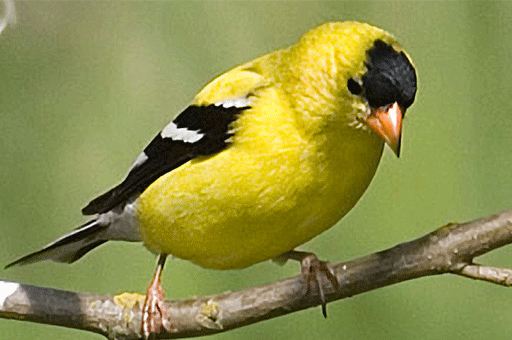The American Goldfinch, or Carduelis tristis, is a Bright Yellow Bird Seen Year-Round, and Prefers Open, Grassy Areas with Thick Brush.
American Robin (Turdus migratorius)
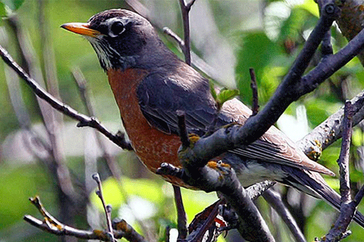The American Robin, or Turdus migratorius, is a Popular Bird and Can Be Spotted Almost Anywhere. They're Not Shy, and Are Often Seen in Towns and Cities.
Barred Owl (Strix varia)
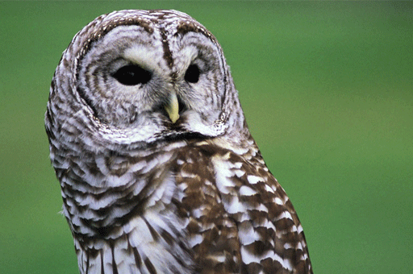The Barred Owl, or Strix varia, are Brown and White All Over, with Dark Brown-Black Eyes. The Underside is an Off-White, Covered with Vertical Brown Stripes or "Bars".
Bluebird (Sialia sialis)
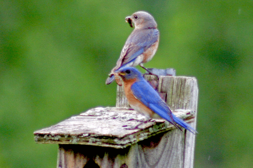The Bluebird, or Sialia sialis, is a Medium-Sized Sky-Blue Feathered Bird Native to North America, Sometimes Seen with a Rusty-Pink Colored Neck.
Loon (Gavia immer)
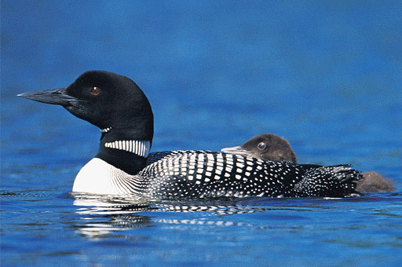The Common Loon, or Gavia immer, has been known as a symbol of grace and beauty for many people. The Loon breeds on lakes and deep ponds, and nest close to shorelines or on small islands.
Crow (Corvus brachyrhynchos)
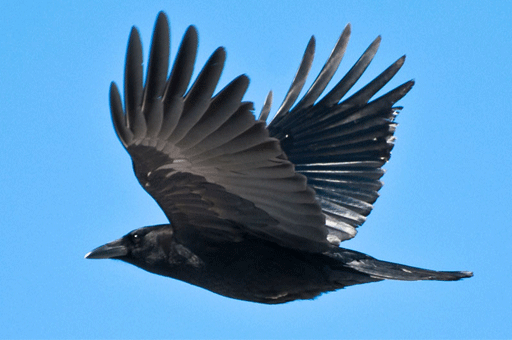The Crow, or Corvus brachyrhynchos, is a large, black, curious bird commonly seen and heard throughout Vermont, with its loud and raucous calls. They are known to carry off and hide bright, shiny objects.
Hermit Thrush (Catharus guttatus)
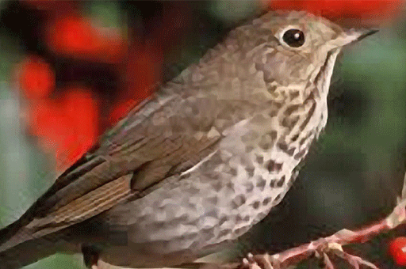The Hermit Thrush, or Catharus guttatus, is the official state bird of Vermont. It is a small brown bird with a spotted breast and a reddish tail. Its musical flute-like song is one of the most beautiful of any North American bird, earning it the nickname American nightingale.
Osprey (Pandion haliaetus)
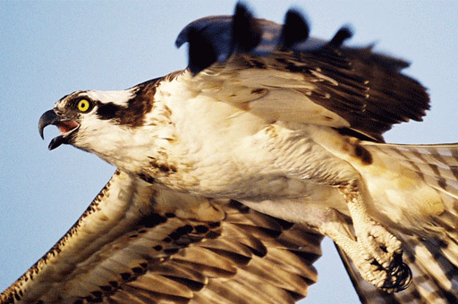The Osprey, or Pandion haliaetus, is a bird of prey that nests near large areas of water. Sometimes referred to as the "fish hawk," the crooked bend of the wings is a distinct characteristic of the Osprey.
Peregrine Falcon (Falco peregrinus)
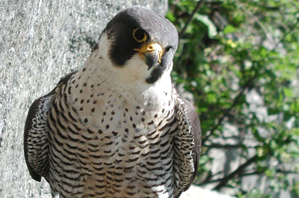The Peregrine Falcon, or Falco peregrinus, is a bird of amazing speed and maneuverability. These birds prefer to nest on high ledges near open areas, such as rivers, lakes, and fields.
Red-Tailed Hawk (Buteo jamaicensis)
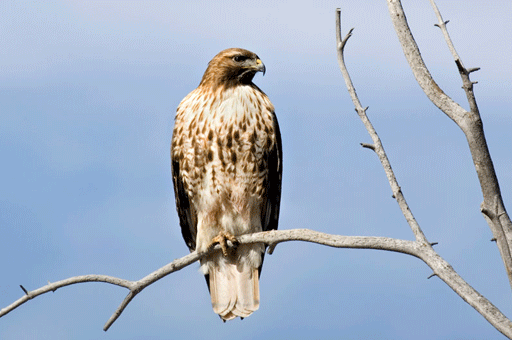The Red-Tailed Hawk, or Buteo jamaicensis, is a familiar sight in Vermont, whether soaring over open farmland or perching in a tree along the highway. It is easily identified by its large size, white breast with brown in bands, and rust colored tail.
Ruby-Throated Hummingbird (Archilochus colubris)
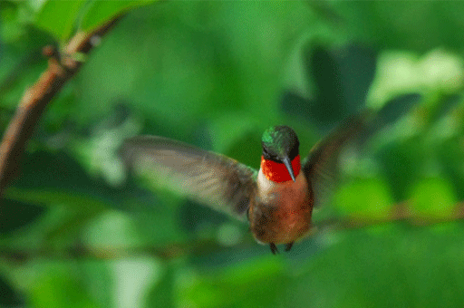The Ruby-Throated Hummingbird, or Archilochus colubris, are most often seen during Summer. They're the smallest of all birds, and the only bird that can fly backwards, as well as hover in one place. It averages 70 wing beats per second.
Ruffed Grouse (Bonasa umbellus)
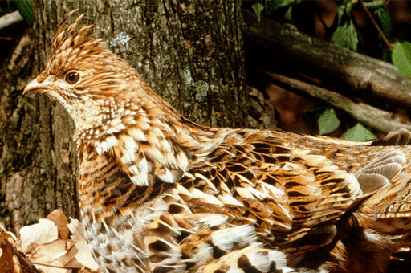The Ruffed Grouse, or Bonasa umbellus, is a non-migratory, ground-dwelling bird. Commonly known as the Partridge, it's known for the explosive flushes it makes when approached too closely as well as for the low drumming sound that the male produces during Spring.
Eastern Wild Turkey (Meleagris gallopavo silvestris)
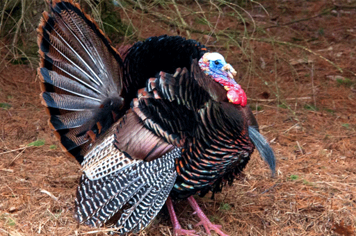The Eastern Wild Turkey, or Meleagris gallopavo silvestris, is the largest-growing and most widely abundant of the five subspecies of Turkey found in the United States.
Woodcock (Scolopax minor)
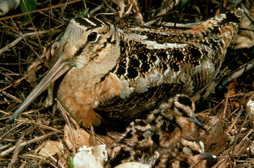The Woodcock, or Scolopax minor, has a distinctive, long flexible bill. It spends much of its day satisfying its appetite by scouting the moist soils of alder and dogwood for earthworms and other invertebrates.